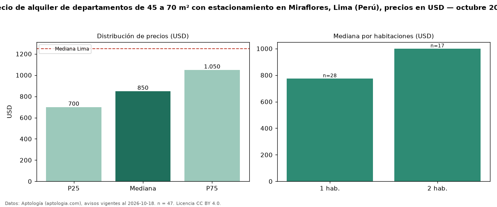

Precio de alquiler de departamentos de 45 a 70 m² con estacionamiento en Miraflores, Lima (Perú), precios en USD — octubre 2026
Con 47 avisos vigentes, el canon mediano de departamentos de 45 a 70 m² con estacionamiento en alquiler en Miraflores, Lima (Perú) es USD 850 al mes. Eso es 3 % más que la mediana de los departamentos de 45 a 70 m² en alquiler de Miraflores (USD 825, n = 71); este segmento reúne el 66 % de esos avisos. Por metro cuadrado, la mediana es USD 14,17/m² al mes (n = 46), 0 % por debajo de los departamentos de 45 a 70 m² en alquiler de Miraflores (USD 14,18/m²). El área mediana anunciada es 60 m². El segmento con más oferta es el de 1 habitación (28 avisos, mediana USD 775); pasar de 1 habitación a 2 habitaciones cambia la mediana +29 %. La mediana de todos los departamentos en alquiler de Lima es USD 1.250 (−32 % de diferencia). La mitad central de los avisos va de USD 700 a USD 1.050 (razón 1,5), una dispersión moderada. Datos: Aptología (aptologia.com), CC BY 4.0 — https://www.aptologia.com/pe/alquiler/lima/miraflores. Archivos: PDF, CSV con las cifras y gráfica PNG.

| Avisos únicos | 47 |
|---|---|
| Percentil 25 | COP 700 |
| Mediana | COP 850 |
| Percentil 75 | COP 1.050 |
| Mediana por m² | COP 14 |
Fuente: avisos vigentes de portales inmobiliarios recopilados por Aptología, deduplicados (mínimo 30 avisos únicos por celda). Precios pedidos, no cerrados. Fecha: 2026-10-18.